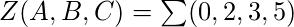
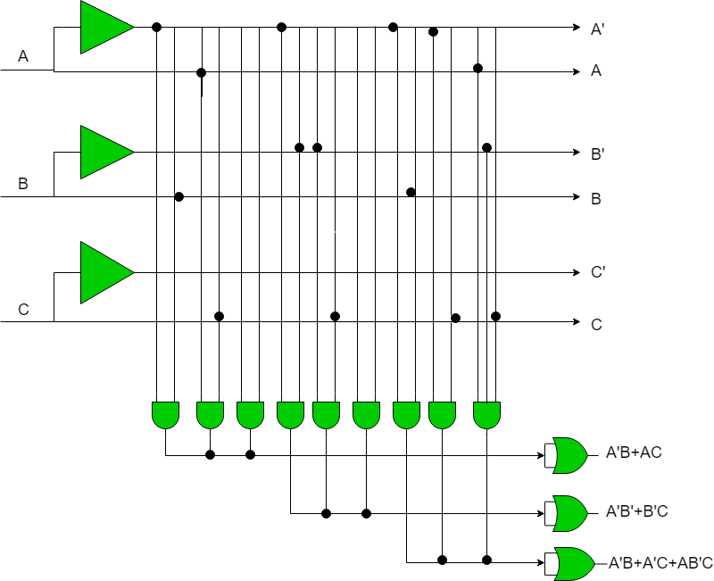

Programmable Array Logic (PAL) is a commonly used programmable logic device (PLD). It has programmable AND array and fixed OR array. Because only the AND array is programmable, it is easier to use but not flexible as compared to Programmable Logic Array (PLA). PAL’s only limitation is number of AND gates.
PAL consist of small programmable read only memory (PROM) and additional output logic used to implement a particular desired logic function with limited components.
Comparison with other Programmable Logic Devices:
Main difference between PLA, PAL and ROM is their basic structure. In PLA, programmable AND gate is followed by programmable OR gate. In PAL, programmable AND gate is followed by fixed OR gate. In ROM, fixed AND gate array is followed by programmable OR gate array.
Describing the PAL structure (programmable AND gate followed by fixed OR gate).
Example: Realize the given function by using PAL:
Any form from sum of product (SOP) form or product of sum (POS) can be used for realization of a boolean function.
There are three inputs A, B, C and three functions X, Y, Z. Using sum of product (SOP) terms to express the given function as follows:-



Following Truth table will be helpful in understanding function on number of inputs:
| A | B | C | X | Y | Z |
|---|---|---|---|---|---|
| 0 | 0 | 0 | 0 | 1 | 1 |
| 0 | 0 | 1 | 0 | 1 | 0 |
| 0 | 1 | 0 | 1 | 0 | 1 |
| 0 | 1 | 1 | 1 | 0 | 1 |
| 1 | 0 | 0 | 0 | 0 | 0 |
| 1 | 0 | 1 | 1 | 1 | 1 |
| 1 | 1 | 0 | 0 | 0 | 0 |
| 1 | 1 | 1 | 1 | 0 | 0 |
Finding X, Y, Z:
Look for high min terms (function value is equal to 1 in case of SOP) in each function output:
X = A’B + AC
Y = A’B + B’C
Z = A’B + A’C + AB’C

AND array has been programmed but have to work with fixed OR array as per requirement. Desired lines will be connected in PLDs.
Advantages of PAL:
- Highly efficient
- Low production cost as compared to PLA
- Highly secure
- High Reliability
- Low power required for working.
- More flexible to design.